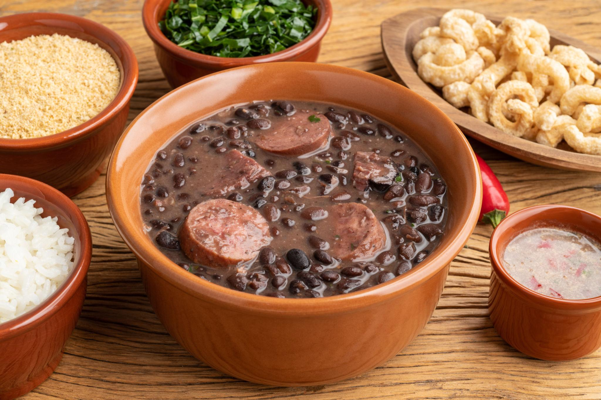
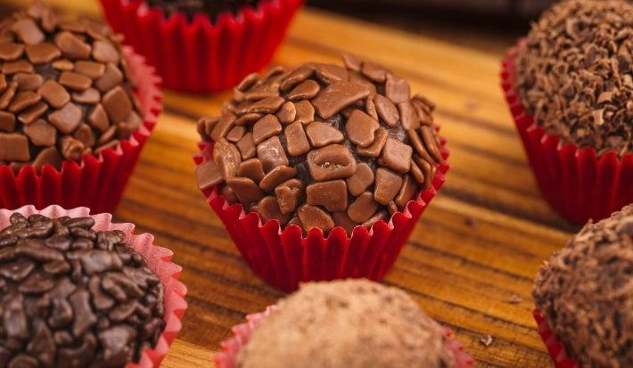
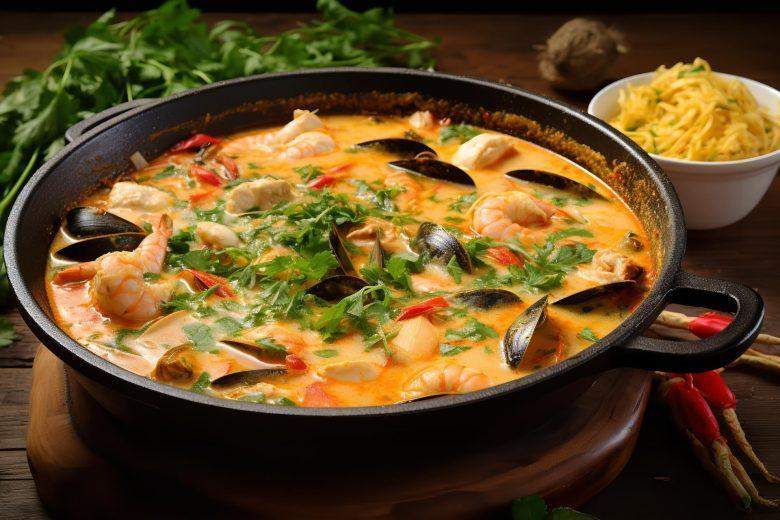
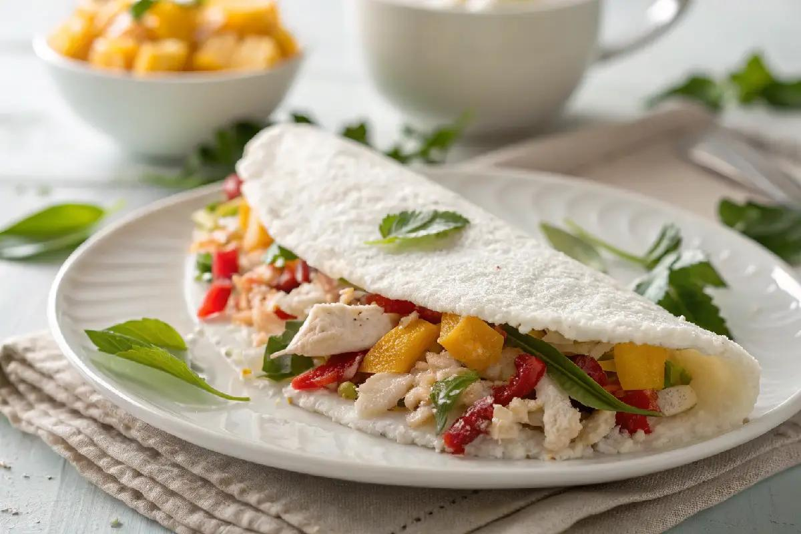
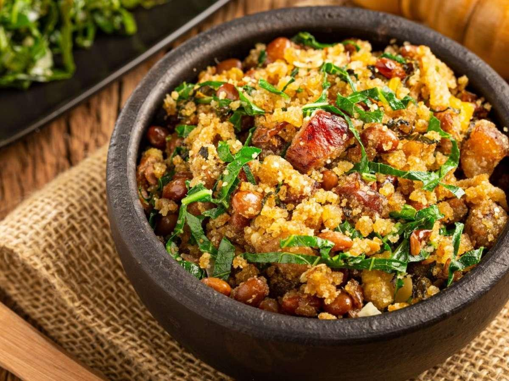
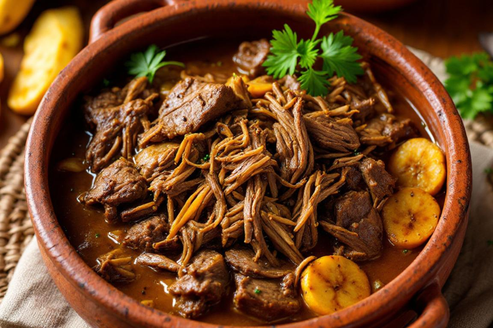
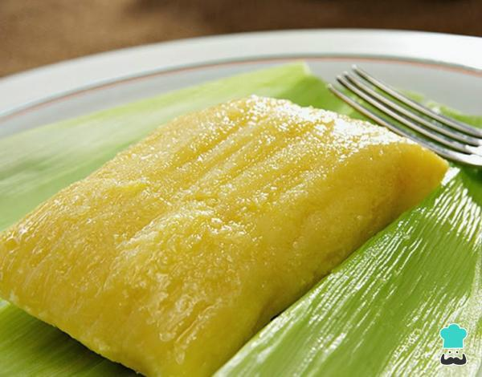
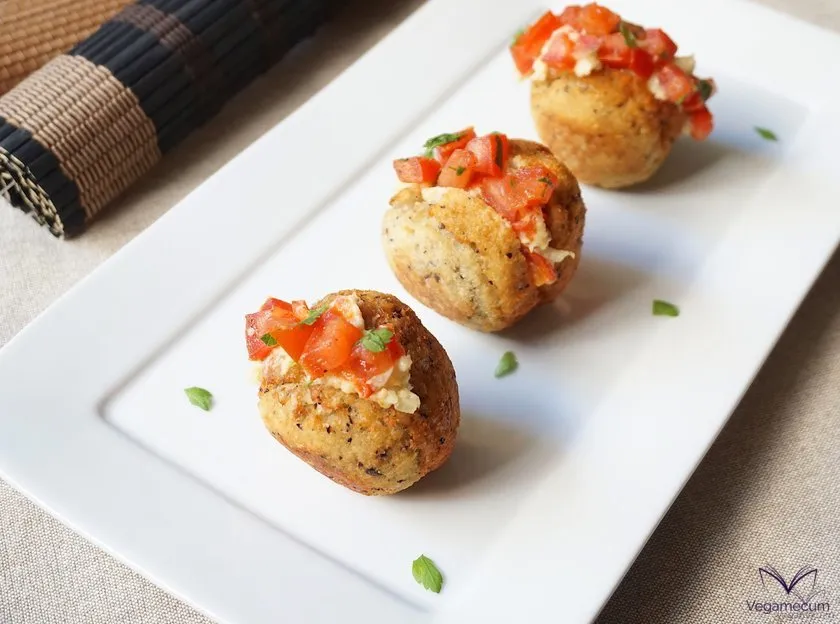

Comidas Típicas

Feijoada
Um dos pratos mais tradicionais do Brasil, feito com feijão preto e várias partes do porco, servido com arroz, couve e farofa.

Brigadeiro
Doce obrigatório em festas de aniversário
Coxinha
Um dos salgados mais populares do país, encontrado em qualquer lanchonete.

Moqueca
Muito famosa na Bahia e no Espírito Santo. Leva peixe, leite de coco, pimentões e temperos fortes.

Churrasco
Clássico do Brasil. Carne assada na brasa, geralmente servida em rodízios, festas, reuniões ou para encerrar a semana.

Tapioca
Feita com goma de mandioca na frigideira. Pode ser doce ou salgada e é muito popular no Brasil todo.

Feijão Tropeiro
Prato de Minas Gerais com feijão, farinha de mandioca, bacon, linguiça e ovos.

Barreado
Carne cozida por horas na panela até ficar bem macia e desfiando. Também conhecido como carne de panela

Pamonha
Feita com milho verde ralado e cozido na palha. Pode ser doce ou salgada.

Acarajé
Tradicional da Bahia. Bolinho de feijão fradinho frito no azeite de dendê, recheado com vatapá e camarão.